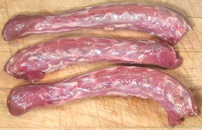

Duck Necks

Duck necks are cheap and plentiful here in Los Angeles. They are the best
way to make a nice, relatively clear duck stock for soup. The photo
specimens are about 8 inches long, 1 inch in diameter and weight about 4
ounces each.
More on Working with Ducks.
Buying:
Find them in markets serving a Chinese community.
In Southern California they're generally skinned and packaged in foam plastic
trays weighing about 2 pounds at about 2009 US $1.19/pound.
Cooking: Chop the necks into about 2 inch lengths using
a razor sharp Chinese cleaver knife. Put in a pot with plenty of water so
they're well covered, bring to a boil and simmer slowly for 4 to 6 hours.
Yes, this is much longer than for chicken. If desired, you can add some
aromatic vegetables and herbs for the last half hour of cooking.
When done, strain out and discard the solids. Separate the fat using
your gravy separator. Discard the fat and refrigerate stock until needed.
bd_dknekz 090704 - www.clovegarden.com
©Andrew Grygus - agryg@clovegarden.com - Photos on this
page not otherwise credited are © cg1 -
Linking to and non-commercial use of this page permitted